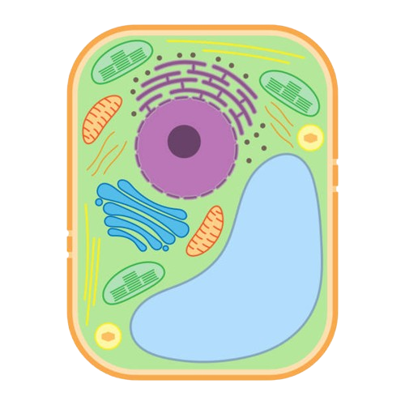

Interactive Biology · Cell Structure
Tap any glowing marker on the cell to learn what that part does. कोषमा देखिने कुनै पनि चम्किलो चिन्हमा थिच्नुहोस र त्यो भागले के काम गर्छ भन्ने थाहा पाउनुहोस्।

"Parts of Plant and Animal Cell and their functions"
Select a part of the cell — from the image or the list below — to see its name and function here.यहाँ नाम र काम हेर्न माथिको चित्र वा तलको सूचीबाट कोषको कुनै भाग छान्नुहोस्।
Organelle
All partsसबै भागहरू